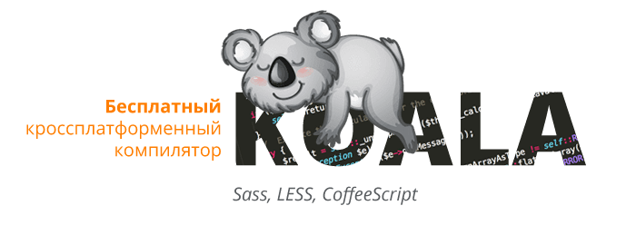
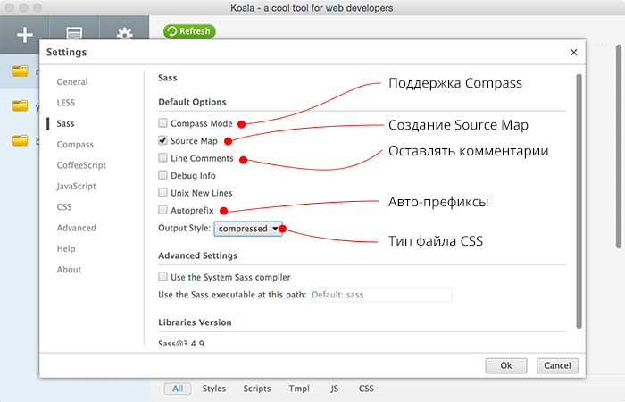

CSS – это язык таблицы стилей, который позволяет настроить визуальное оформление веб-страницы или приложения, а также расположить объекты на экране в определенном порядке и плоскости. Это основной механизм, отвечающий за то, как выглядят сайты и программы, построенные на базе веб-технологий.
CSS-препроцессор – это программа, позволяющая генерировать CSS-код, используя уникальный синтаксис, присущий только конкретному препроцессору.
Sass. Появился в 2006 году как способ упростить работу с CSS и сразу стал популярен у разработчиков. Некоторые считают, что у Sass невысокая скорость работы, но на практике это можно заметить только на очень больших проектах.
У Sass есть два синтаксиса:
- Sass —не используются фигурные скобки, а всё сделано на отступах, как в Python.
- SCSS — в нём есть фигурные скобки и есть поддержка современных CSS-трюков, которые используются в разных браузерах. Этот формат появился после выхода LESS.
LESS. В 2009 году другие программисты показали свою версию препроцессора, основанную на Sass. Они взяли за основу чистый CSS-синтаксис и добавили в него возможность использовать все расширения как в Sass.
Есть и другие препроцессоры — например, тот же Stylus. Принципиально он делает то же самое, но использует другой синтаксис, более лаконичный и простой.
- SASS – самый популярный и часто используемый. Отличается от остальных наиболее сложным синтаксисом. Требует более четко прописывать визуальные стили и все же заставляет вводить больше кода, чем хотелось бы. Но при этом SASS обладает функциями, недоступными у конкурентов, поэтому он и лежит в основе многих фреймворков.
- LESS – более простой с точки зрения синтаксиса препроцессор, но более ограниченный с функциональной точки зрения. При этом имеет более качественную поддержку в большинстве IDE и отлично подходит для новичков и несложных сайтов.
- Stylus – интересный язык, в заметной степени меняющий представление о том, как оформляется CSS. Он напоминает Python, где отсутствуют многие скобки и спецсимволы.
- PostCSS – мощный препроцессор с автоматической проверкой на ошибки, подстановкой нужных префиксов и генерацией названий для селекторов.
Что выбрать
Sass (SCSS) подойдёт тем, кто больше любит программирование, чем вёрстку.
LESS понравится всем, кому приглянулся чистый CSS-синтаксис, но хочется сделать работу ещё проще.
Stylus можно выбрать тем, кто ценит в коде лаконичность и минимализм.
Когда использовать препроцессоры
Если у вас CSS-код занимает не больше одной-двух страниц, нет смысла использовать препроцессоры: настройка и описание кода займёт больше времени, чем сразу написать то, что нужно. А вот если у вас большой сайт с разным дизайном на странице или очень сложная CSS-вёрстка, то тут уже пригодятся препроцессоры.
Преимущества
Недостатки
Что такое Koala
Koala — это кроссплатформенная программа для компиляции Less, Sass, Compass и CoffeeScript, помогающее веб-разработчикам использовать их более эффективно. Работает на Win, Mac OS и Linux.
Koala хорошо подходит для начинающих разработчиков или тех, кто делает небольшой проект и не хочет разворачивать полную версию Gulp или Grunt.
Скачивайте программу с официального сайта разработчиков
Интерфейс
Настройки SASS и LESS
Посмотрим на вкладку с настройками SASS. За пару кликоы Koala начнет отслеживать SASS-файлы и автоматически компилировать их в CSS, никаких дополнительных действий не требуется.
В типе файла CSS рекомендуется выбирать compressed, так его вес будет минимальным, а для удобства разработки оставлять включенными Source maps.
Autoprefix — это автоматическое добавление префиксов для поддержки свойств CSS3 в браузерах устаревших версий. Например, для закругления углков достаточно написать:
border-radius: 3px;
В итоге после префикса получите:
-webkit-border-radius: 3px;
-moz-border-radius: 3px;
border-radius: 3px;
Кроме того, настройки для каждого типа файлов доступны в панели справа. Для этого выберите файл в списке и в правой части откроются настройки для файлов этого типа.
Настройки JavaScript и CoffeeScript
Для JS есть всего две настройки:
- Compress — всегда включайте, чтобы полученный js-файл сжимался
- Preserve copyright comments
Для CoffeeScript в 99% случаев вы оставите настройки по умолчанию, поэтому останавливаться на них нет смысла.